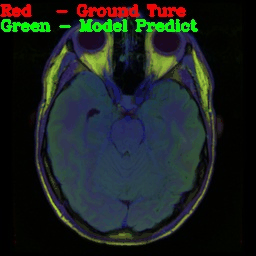
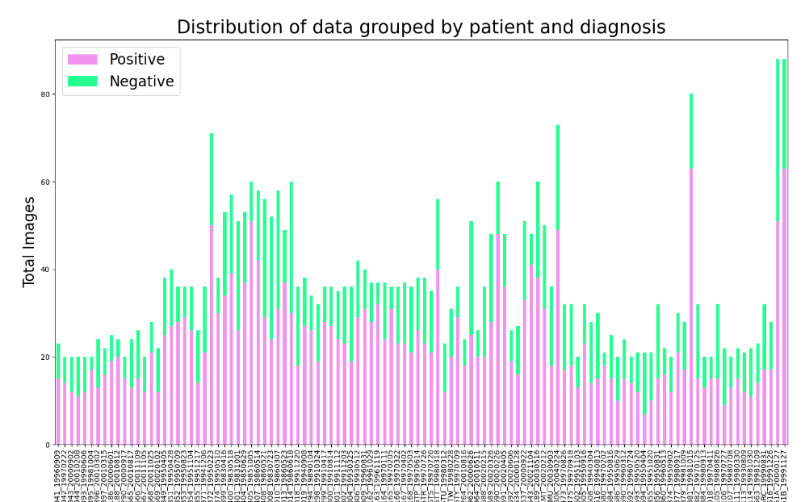
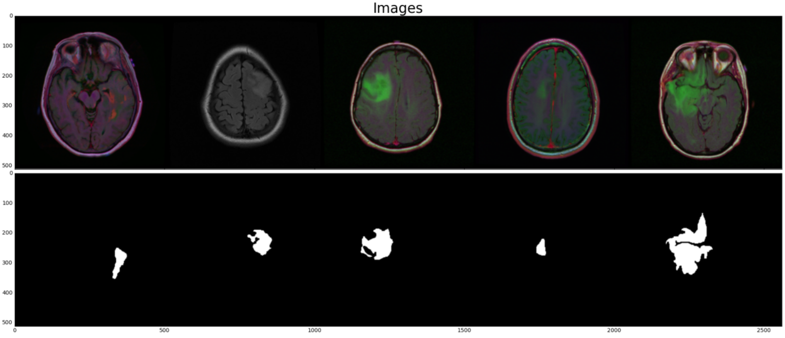
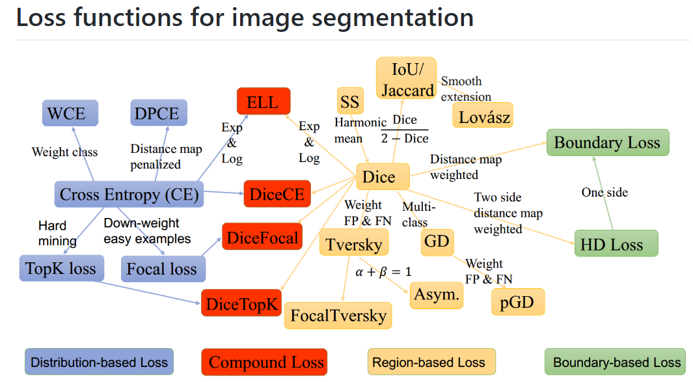
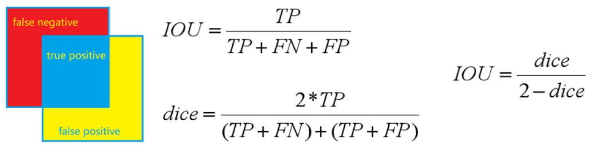
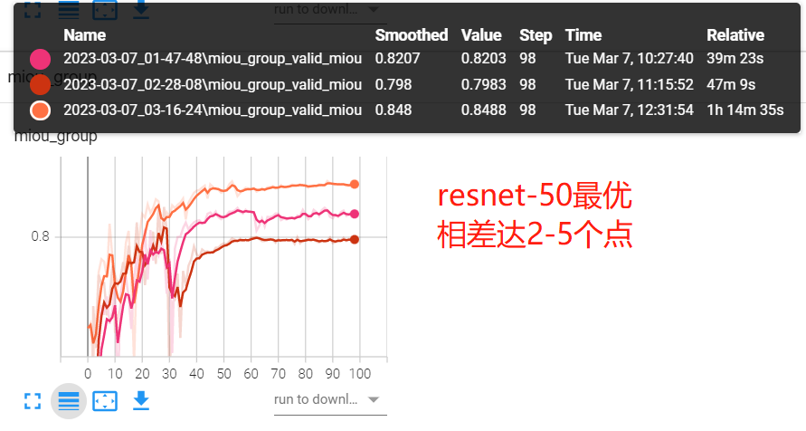
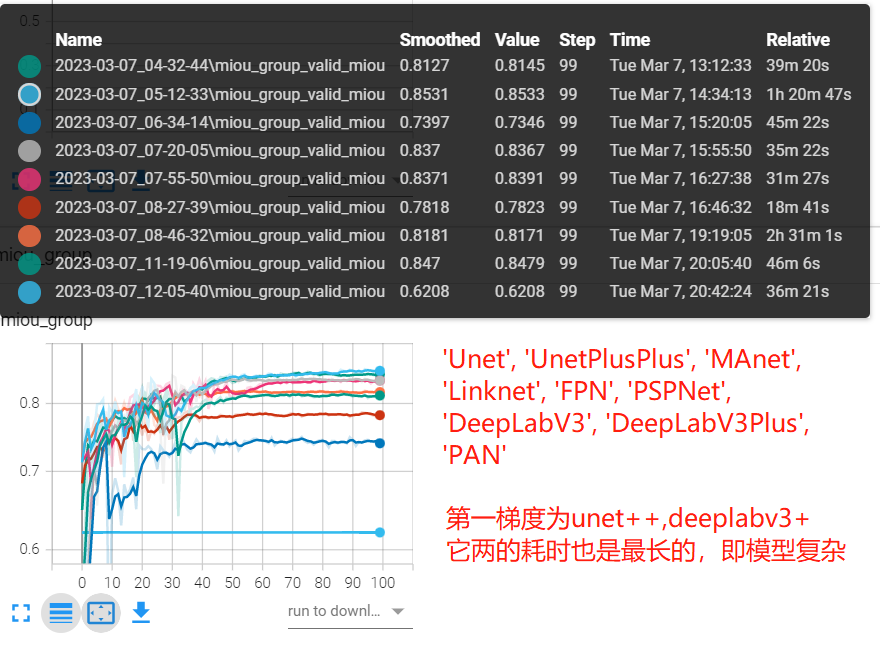
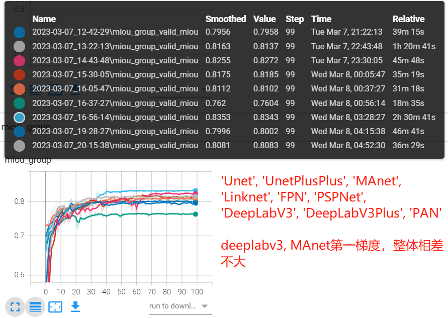

8.2 图像分割案例——脑MRI胶质瘤分割

前言
本案例以脑部MRI肿瘤数据为例，介绍图像分割（本节特指语义分割）的训练、推理过程。其中，涉及的知识点有：
- 基于csv的数据集维护管理，及其dataset编写；
- smp库的介绍与使用：segmentation_models_pytorch库，是语义分割的高级API库，提供9种分割架构、数百个encoder的backbone及预训练权重，以及分割的loss和衡量指标计算函数，是语义分割的好帮手，使用它可以快速实现各语义分割功能；
- 对smp中9中网络架构对比实验，网络架构分别是：'Unet', 'UnetPlusPlus', 'MAnet', 'Linknet', 'FPN', 'PSPNet', 'DeepLabV3', 'DeepLabV3Plus', 'PAN';
- 语义分割iou计算时，image-wise与整体计算的差异，当纯阴性片时，iou统计应当采用image-wise更合理。
- 探究不同backbone对于语义分割的效果差异；
- 探究不同loss对语义分割的效果差异；
- 探究encoder采用较小学习率时，模型的精度变化。
本案例将从数据介绍、训练代码、smp库使用、对比实验和模型推理，五个模块进行讲解。
数据模块
数据集来自Kaggle，包含110位脑胶质瘤患者的MRI数据，总共3929张图片，其中有肿瘤区域的图片为2556张，阴性图片1373张。
下图为每个患者图片数量，以及阴、阳图片的比例汇总，从图中可知，一个MRI序列包含20-40张图片，其中出现肿瘤的图片有60%左右。（不过这里需要注意，肿瘤区域的像素点还还是远小于阴性像素点区域的）

下图为数据集示意，第一行为MRI图像，第二行为人工标注的脑胶质瘤mask。

数据集划分
首先下载数据集，解压得到kaggle_3m文件夹，然后设置数据根目录data_dir = args.data_path，运行下面代码，即可得到对应csv
python 01_parse_data.py --data-path /mnt/chapter-8/data/kaggle_3m
数据集为110个文件夹形式，这里需要进行数据集划分，本案例采用csv对数据集进行维护，这里将会通过01_parse_data.py对数据集进行解析，获得以下三个csv
- data_info.csv：包含文件夹id、图片路径、标签路径；
- data_train.csv：根据文件夹id分组划分的训练集，比例为80%，有88位患者的3151张图片；
- data_val.csv：根据文件夹id分组划分的验证集，比例为20%， 有22位患者的778张图片；
知识点：数据划分需要按患者维度划分，不能基于图片维度随机划分，基于图片维度随机划分会使得模型存在作弊行为，导致模型在真实应用场景下效果很差。
为什么不能基于图片维度划分数据？因为这样做的话，以为患者的40张图片，有32张用于训练，另外8张用于测试，这8张与那32张是非常接近的，因为是同一个人的连续影像。这样划分的数据集是带有偏差的，理所当然的效果很好，模型不容易出现过拟合。后续的实验也证明了这一点，基于图片维度划分的精度要高出10个百分点。
Dataset编写
dataset编写就相当容易了，因为数据的路径信息已经获得，因此只需要注意数据读取进来之后，如何转换称为标签的格式即可。
这里要注意，对于语义分割，若采用的是交叉熵损失函数，Dice损失函数，它们要求标签是一个long类型数据，不需要手动转为one-hot向量，因此对于本实验，mask要变成一个[256,256]的矩阵，其中每个元素是0或者1。对应的实现代码如下：
mask = cv_imread(self.df.iloc[idx, 2])
mask[mask == 255] = 1 # 转换为0, 1 二分类标签
mask.long()
训练代码
训练代码整体结构仍旧沿用第七章第四节中的训练脚本实现。
在此处需要做的修改主要是，语义分割模型的创建、分割模型的Loss创建、分割模型指标评价，以下四行代码分别是对应的实现
model = smp.Unet(encoder_name=args.encoder, encoder_weights="imagenet", in_channels=3, classes=1)
criterion = smp.losses.DiceLoss(mode='binary')
tp, fp, fn, tn = smp.metrics.get_stats(outputs.long(), labels, mode="binary")
iou_score = smp.metrics.iou_score(tp, fp, fn, tn, reduction="macro")
可以发现，这里面无一例外都用到了smp库，下面简单介绍smp库的优点，以及使用方法。
smp库介绍
segmentation-models-pytorch是pytorch的语义分割工具库，提供9个分割框架，数百个encoder，常用的loss，指标计算函数，非常方便开发者进行语义分割开发。
这是smp库的github链接与官方文档
github: https://github.com/qubvel/segmentation_models.pytorch
docs:https://smp.readthedocs.io/en/latest/
它安装很方便，只需要pip即可， pip install segmentation-models-pytorch。
掌握pytorch基础知识的话，smp库只需要10分钟即可掌握上手，更系统应用建议配合smp库的两个案例进行学习。
下面将从模型创建、loss创建、指标计算三个部分介绍smp使用。
模型创建
语义分割模型发展至今，主要还是采用encoder-decoder的形式，通常会采用主流的CNN作为encoder，decoder部分则进行随机初始化去训练。
而encoder与decoder之间如何信息交互、以及decoder由哪些组件构成等等一系列问题，就引出了不同的语义分割架构。
在smp中，提供了9种常用的语义分割模型架构，分别是'Unet', 'UnetPlusPlus', 'MAnet', 'Linknet', 'FPN', 'PSPNet', 'DeepLabV3', 'DeepLabV3Plus', 'PAN'。
在语义分割中，除了架构、encoder，输入和输出的维度也非常重要，这关系到可接收的数据形式是什么，以及可以预测的类别有多少个。
因此，一个语义分割模型的创建，需要确定架构、选择encoder、再确定输入通道数、输出通道数。
下面介绍unet的创建
import segmentation_models_pytorch as smp
model = smp.Unet(
encoder_name="resnet34", # choose encoder, e.g. mobilenet_v2 or efficientnet-b7
encoder_weights="imagenet", # use `imagenet` pre-trained weights for encoder initialization
in_channels=1, # model input channels (1 for gray-scale images, 3 for RGB, etc.)
classes=3, # model output channels (number of classes in your dataset)
)
对于初学者来说，那么多模型或许是个头痛的问题，后续也进行了对比实验，采用相同的encoder（resnet-18），分别训练9个语义分割架构，观察精度变化。
从经验来说，凡是有系列的模型都是应用广泛、相对可靠的模型，例如net系列，deeplab系列，yolo系列等等。
如何用代码来实现类属性的调用，这里是一个值得学习的代码段，这里主要通过getattr()方法获取module的属性，然后对其进行实例化即可。
archs = ['Unet', 'UnetPlusPlus', 'MAnet', 'Linknet', 'FPN', 'PSPNet', 'DeepLabV3', 'DeepLabV3Plus', 'PAN']
for arch_str in archs:
model_class = getattr(smp, arch_str)
model = model_class(encoder_name=args.encoder, encoder_weights="imagenet", in_channels=3, classes=1)
更多关于分割模型的介绍，可以参见：https://smp.readthedocs.io/en/latest/
损失函数创建
smp提供了8个损失函数，分别是JaccardLoss、DiceLoss、TverskyLoss、FocalLoss、LovaszLoss、SoftBCEWithLogitsLoss、SoftCrossEntropyLoss、MCCLoss。具体差异参见官方文档，这里要讲讲损失函数创建时，需要设置的模式。
损失函数创建时需要设置mode，smp库提供了3种mode，分别是二分类、多分类、多标签分类。
二分类：'binary'， 用于一个类的分割（阴性不算一个类，例如本案例），对于二分类，标签需要是(N, H, W)的形式，元素为0或1，,它不需要通道维度，而模型输出是跟着pytorch走的，因此仍旧是4D张量，形状是(N, 1, H, W).
多分类：'multiclass'，多分类是更为常见的场景，例如VOC、COCO数据集，这时标签元素为0, 1, ..., C-1，类似交叉熵损失函数（可以把语义分割看成是逐像素分割），模型的输出自然是(N, C, H, W)了，因为一个像素点，需要用C维的分类概率向量来做分类。
多标签：'multilabel'，多标签语义分割指一个像素即是A类又是B类，因此它的标签需要借助C个通道来标注，对应类别设置为1，其它设置为0。所以标签形式为(N, C, H, W)，模型输出仍旧是(N, C, H, W)，多标签需要注意模型输出时就不再做softmax，而是对每个神经元做sigmoid，以此判断该类是否存在。
对于loss的选择，一般是交叉熵损失函数、Dice这两个系列，其它的可以自行选择，它就像模型架构一样，学术界有几十上百个选择，但在工程领域，仁者见仁智者见智，更多的语义分割损失函数可参考SegLoss

指标计算
语义分割可以理解为逐像素的图像分类，因此图像分类的各指标也可用于衡量分割模型，但分割与分类不同的是，它注重空间结构信息，关注集合与集合之间的关系，因此更常用的是IoU或Dice系数来评估模型。
IoU（Intersection over Union，交并比）是用来衡量两个集合重叠的情况，公式计算为：交集/并集，而dice系数（Dice similarity coefficient，又名dsc）也用于评估两个集合重叠情况，但是计算公式不一样，而且根据文章阐述, "Dice倾向于衡量平均性能，而 IoU 倾向于衡量最坏的表现。"
具体计算时，通常先获得tn, tp, fn, fp，然后计算指标。蓝色部分为TP(True Positives)，红色部分为FN(False Negatives)，黄色部分为(False Positives)

smp工具库中也是这么做的，首先根据smp.metrics.get_stats函数，获得tp, fp, fn, tn。随后通过各指标计算函数获得相应指标，
可计算的指标有fbeta_score、f1_score、iou_score、accuracy、precision、recal1、sensitivity、specificity、balanced_accuracy、positive_predictive_value、negative_predictive_value、false_negative_rate、false_positive_rate、false_discovery_rate、false_omission_rate、positive_likelihood_ratio、negative_likelihood_ratio。
来看一段使用示例：
import segmentation_models_pytorch as smp
# lets assume we have multilabel prediction for 3 classes
output = torch.rand([10, 3, 256, 256])
target = torch.rand([10, 3, 256, 256]).round().long()
# first compute statistics for true positives, false positives, false negative and
# true negative "pixels"
tp, fp, fn, tn = smp.metrics.get_stats(output, target, mode='multilabel', threshold=0.5)
# then compute metrics with required reduction (see metric docs)
iou_score = smp.metrics.iou_score(tp, fp, fn, tn, reduction="micro")
f1_score = smp.metrics.f1_score(tp, fp, fn, tn, reduction="micro")
f2_score = smp.metrics.fbeta_score(tp, fp, fn, tn, beta=2, reduction="micro")
accuracy = smp.metrics.accuracy(tp, fp, fn, tn, reduction="macro")
recall = smp.metrics.recall(tp, fp, fn, tn, reduction="micro-imagewise")
在使用时，需要注意的有2个地方，
- 计算tp, fp, fn, tn时，模型输出要转换为类别标签，而不是概率向量。
- 对batch数据统计时，是否需要考虑样本不平衡问题，进行加权平均，是否需要基于图像维度进行计算后再平均。
对于问题1，get_stats函数提供了二分类、多标签时的处理方法，只需要在model下设置'binary' 或 'multiclass'之后，设置threshold即可。从此可看出需要手动进行sigmoid()；
对于问题2，较为复杂一些，smp提供了6个模式，这些在sklearn中有的，分别是，'micro' ， 'macro' ， 'weighted' ， 'micro-imagewise' ， 'macro-imagewise' ， 'weighted-imagewise'。
'micro’ 用于计算总体的指标，不对每个类别进行计算，
'macro'计算每个类别的指标，然后求和平均，不加权。
’weighted’ 计算每个类别的指标，然后根据每类样本数，进行加权求平均
可参考（https://blog.csdn.net/qq_27668313/article/details/125570210）
对于x-imagewise，表示根据图片维度进行计算，然后将指标求取平均。
因此，可知道，前缀micro、macro、weighted是决定如何对类别进行求取平均，后缀-imagewise表示如何对图片之间进行求平均。
所以，对于binary来说，'micro' = 'macro' = 'weighted' ，并且 'micro-imagewise' = 'macro-imagewise' = 'weighted-imagewise'。
在这里重点讲一下，本案例采用的是macro来统计，因此iou比较低，如果是手写iou统计，一般会基于图片维度计算，然后再平均，也就是macro-imagewise。
本案例中，由于大量阴性图片的存在，所以若不采用-imagewise的话，阴性片虽然预测正确，但实际上是tn很大，而tn缺不计入iou计算中。若采用imagewise，阴性预测正确时，iou为1，从而可以大幅度提高iou值。
下面可以通过代码观察，对于阴性片，模型预测完全正确，tp, fp, fn值都是0的情况下，iou也是会被计算为1的。
tp, fp, fn, tn = smp.metrics.get_stats(c, b, mode="binary")
tp
Out[12]: tensor([[0]], device='cuda:0')
fp
Out[13]: tensor([[0]], device='cuda:0')
fn
Out[14]: tensor([[0]], device='cuda:0')
tn
Out[15]: tensor([[65536]], device='cuda:0')
smp.metrics.iou_score(tp, fp, fn, tn, reduction="macro")
Out[16]: tensor(1., device='cuda:0')
对比实验
此部分实验没有进过严格微调，只用于横向比对，主要观察不同架构、不同backbone、不同学习率策略之间的差异，可以大体上观察出一定的趋势，供大家参考，以便后续选择模型。
在这里主要做了4次实验，分别是：
实验一：不同backbone的实验，猜想为越复杂的backbone，精度越高，这里采用uent-resnet18/34/50来观察。
实验二：不同网络架构之间的实验，猜想是有系列的模型，鲁棒性更高，适用性更广，如unet、deeplab系列。这里backbone均采用resnet-18，训练了九个模型。
实验三：encoder采用小10倍学习率，让decoder学习率高一些，猜想是要比相同学习率的效果更好，这里就需要与实验二中的九个模型精度对比。
实验四：根据图片随机划分与病人维度划分的差异，猜想是根据图片随机划分，精度要比病人高的，毕竟用到了极其类似的图片进行训练。
实验完整代码在github
实验一：不同backbone的差异
python 02_train_seg.py --batch-size 16 --workers 8 --lr 0.01 --epochs 100 --useplateau --model unet --encoder resnet18
python 02_train_seg.py --batch-size 16 --workers 8 --lr 0.01 --epochs 100 --useplateau --model unet --encoder resnet34
python 02_train_seg.py --batch-size 16 --workers 8 --lr 0.01 --epochs 100 --useplateau --model unet --encoder resnet50
| unet-resnet18 | unet-resnet34 | unet-resnet50 | |
|---|---|---|---|
| miou | 0.82 | 0.79 | 0.84 |

结论：可证实猜想基本正确，越复杂的backbone，精度越高。但resnet34的精度反而比resnet18要差，这个需要仔细研究，在此不做讨论。
实验二：对比不同模型架构差异
python 03_train_architecture.py --batch-size 16 --workers 4 --lr 0.01 --epochs 100 --useplateau --encoder resnet18
这里可以看到unet++和deeplabv3+精度较高，过它们的训练速度也是最慢的，侧面反映出它的模型复杂，理所应当获得最高精度。
| 'Unet' | 'UnetPlusPlus' | 'MAnet' | 'Linknet' | 'FPN' | 'PSPNet' | 'DeepLabV3' | 'DeepLabV3Plus' | PAN | |
|---|---|---|---|---|---|---|---|---|---|
| miou | 0.81 | 0.85 | 0.73 | 0.83 | 0.83 | 0.78 | 0.81 | 0.84 | 0.62 |

实验三：encoder采用更小学习率差异
# encoder采用小10倍学习率
python 03_train_architecture.py --batch-size 16 --workers 4 --lr 0.01 --epochs 100 --useplateau --encoder resnet18 --lowlr
要想获得好的精度，往往需要各种trick来微调，对于语义分割模型中encoder部分，可以采用较小学习率，因为encoder提取的是共性的语义特征，对于decoder才需要特有的特征，因此可以对它们两个进行差异化设置学习率。为此，对encoder学习率乘以0.1，观察模型精度变化。
从实验结果来看，简单粗暴的调整大都未获得精度提升，反而都存在3-4个点的掉点，deeplabv3, MAnet， PAN缺有提升，由此可见训练的trick还是难以适应各个场景的。
综合实验二、实验三，可以观察到unet系列和deeplab系列都是比较稳定的，这也是它们一直被工业界认可、使用至今的原因，因此推荐首选Unet系列或deepalabv3+进行任务的初步验证。
| 'Unet' | 'UnetPlusPlus' | 'MAnet' | 'Linknet' | 'FPN' | 'PSPNet' | 'DeepLabV3' | 'DeepLabV3Plus' | PAN | |
|---|---|---|---|---|---|---|---|---|---|
| lowlr | 0.79 | 0.81 | 0.82 | 0.81 | 0.81 | 0.76 | 0.83 | 0.80 | 0.80 |
| base | 0.81 | 0.85 | 0.73 | 0.83 | 0.83 | 0.78 | 0.81 | 0.84 | 0.62 |

实验四：根据图片随机划分数据集
此实验需要在01_parse_data.py 代码中的data_split()函数下修改groupby的对象，需要改为
grouped = dff.groupby('image_path') # bad method
并且将csv文件名做相应修改。
| miou | 细节 | |
|---|---|---|
| unet-resnet18 | 0.82 | 基于patient维度划分 |
| unet-resent18 | 0.88 | 基于imgs维度划分 |
很明显，基于imgs维度划分存在很明显的性能提升，约6个点，但是这个提升是假性的，会迷惑工程师，误以为模型很好。
这是实际业务场景中常碰到的问题，一定要注意业务数据的维度划分问题。
模型推理
模型推理与图像分类类似，没有什么特殊的地方，在这里想重点讲一下模型输出的数据如何转换为要用的类别mask。
由于是二分类，并且输出是一通道的矩阵，因此会采用sigmoid将它变为分类概率的形式，然后再通过阈值（一般设为0.5）转换为0/1的mask矩阵。如下代码所示：
outputs = model(img_tensor_batch)
outputs_prob = (outputs.sigmoid() > 0.5).float()
outputs_prob = outputs_prob.squeeze().cpu().numpy().astype('uint8')
接着通过opencv寻找轮廓函数可以得到边界，最后进行可视化。
最后通过imageio实现gif图的生成，可参见05-gen-gif.py。
即可得到下图
小结
通过本案例，可以掌握：
- 语义分割模型的训练与推理流程
- smp工具库中的模型创建、损失函数创建、评价指标计算使用
- 评价指标中，micro、macro、weighted， x-imagewise的差别
- dice与iou评价指标的定义与差异
- 9个语义分割架构实验比对，为后续选择模型提供参考
- 医学数据处理划分维度，需要基于患者维度，不可基于图片维度
基于本案例需要进一步学习的内容：
- 采用多类分割任务进行实验，了解softmax与sigmoid的处理差异；
- 进一步了解unet系列、deeplab系列适合的场景
- 语义分割后处理：图像处理的形态学操作